00:03在本期视频中，你将了解一个非常有用的概念，叫做向量化。
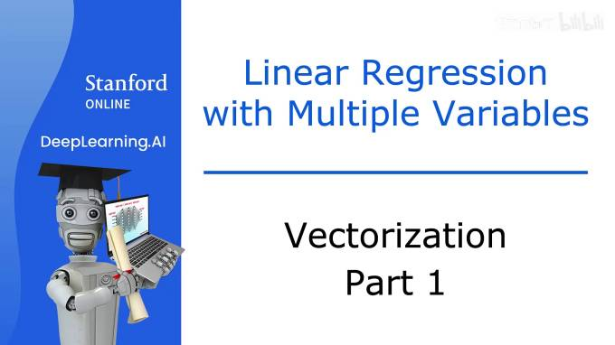
00:09一旦你实现一个学习算法时，使用向量化不仅能让你的代码更短，还能让它运行得高效得多。
00:18学习如何编写向量化代码，也能让你利用现代数值线性代数库，甚至可能是 GPU 硬件，即图形处理器单元。
00:30这是一种可选设计用于加速计算机图形处理的硬件，但事实证明，当你编写向量化代码时，它也能用来帮助你的代码执行得快得多。
00:42我们来看一个具体的例子，说明向量化意味着什么。
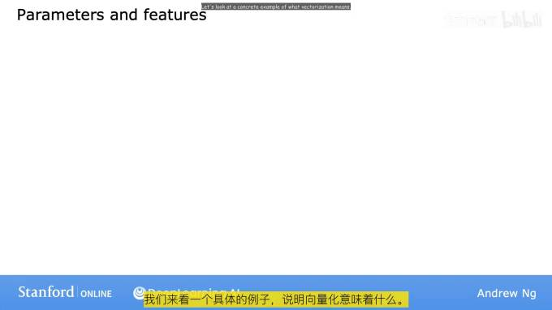
00:47这里有一个关于参数 w 和 b 的例子，其中 w 是一个包含三个数字的向量，你还有一个特征向量 x，也包含三个数字。
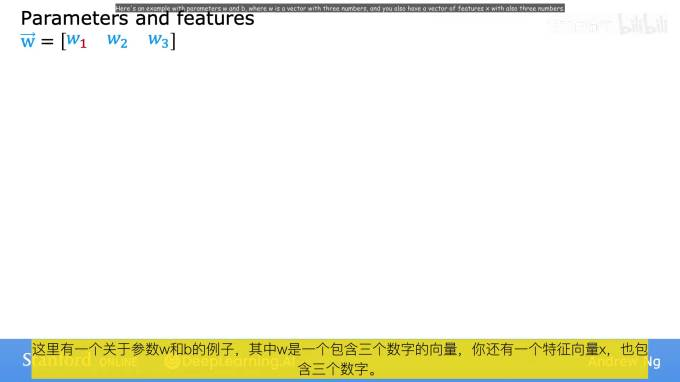
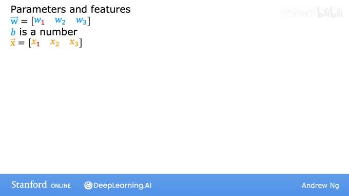
01:04请注意，在线性代数中，索引或计数是从一开始的，所以第一个值下标是 w 一和 x 一。
01:16在 Python 代码中，你可以使用这样的数组来定义这些变量 w、b 和 x。
01:24这里，我实际上用的是一个 Python 中的数值线性代数库，叫做 NumPy，它是迄今为止 Python 和机器学习领域使用最广泛的数值线性代数库。N。
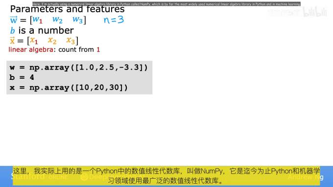
01:37因为在 Python 中，数组的索引或计数是从零开始的，你会用 w 方括号零来访问 w 的第一个值，用 w 方括号一来访问第二个值，用 w 方括号二来访问第三个值。
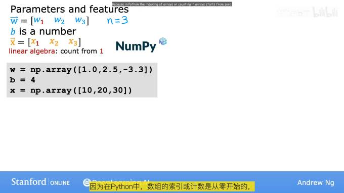
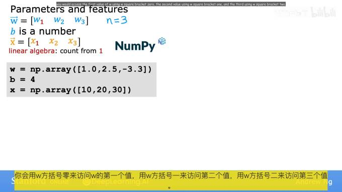
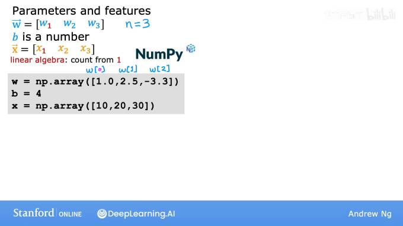
01:58所以这里的索引是从零、一到二，而不是一、二、三。
02:06类似地，要访问 x 的各个特征，你会用 x 零、x 一和 x 二。
02:14许多编程语言，包括 Python，都是从零开始计数，而不是从一开始。
02:20现在，我们来看一个不使用向量化来计算模型预测的实现。
02:27在代码中，它看起来会像这样。
02:30你取每个参数 W，并将其乘以其关联的特征。
02:37现在，你可以像这样写代码，但如果 n 不是三，而是 n 等于一百或者十万呢？
02:44这样对你来说编写代码效率低，对你的计算机来说计算效率也低。
02:50所以，这里是另一种方式，仍然没有使用向量化，但使用了 for 循环。
02:57在数学中，你可以使用求和运算符，对 j 从一到 n，将所有 wj 和 xj 的乘积相加。
03:07然后在求和符号外面，最后加上 b。
03:12所以求和是从 j 等于一一直到 n，包括 n。
03:18对于 n 等于三，j 因此从一、二，到三。
03:23在代码中，你可以先将 f 初始化为零。
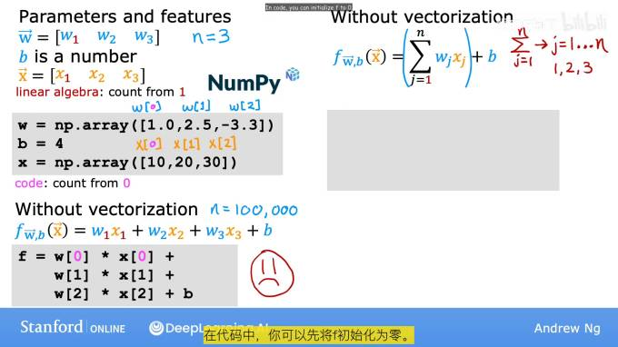
03:27然后对 j 在从零到 n 的范围内，这实际上使 j 从零取到 n 减一。
03:40然后你可以将 wj 乘以 xj 的积加到 f 上。
03:47最后，在 for 循环之外，你再加上 b。
03:51注意在 Python 中，范围零到 n 意味着 j 从零一直取到 n 减一，不包括 n 本身。
04:00更常见的写法是 Python 中的 range n，但在这期视频里，我在这里加了个零，只是为了强调它是从零开始。
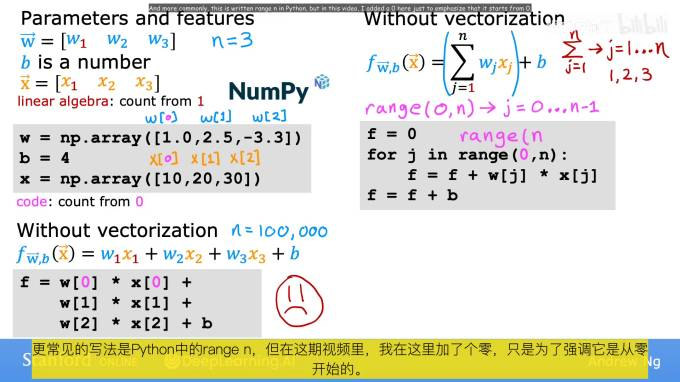
04:11虽然这个实现比第一个好一些，但它仍然没有用到向量化，效率也不是那么高。
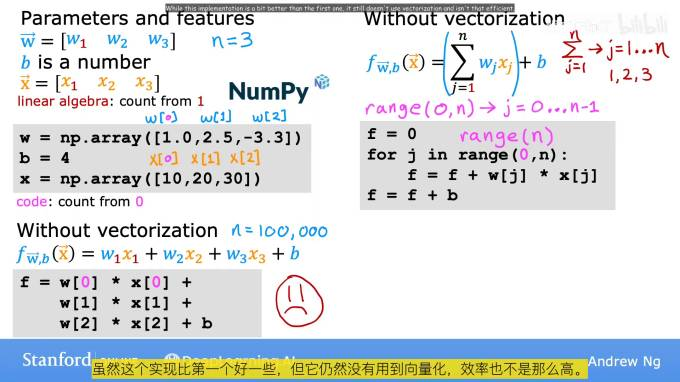
04:20现在，我们来看看如何用向量化来做这件事。
04:26这是函数 f 的数学表达式，它是 w 和 x 的点积再加上 b。
04:33现在你可以用一行代码来实现它，计算 f 等于 np 点。
04:42我说“点”两次，因为第一个点是点号，第二个点是名为 dot 的函数或方法。
04:50但就是 f 等于 np 点 dot，括号 w，逗号 x。
04:55这实现了向量 w 和 x 之间的数学点积运算。
05:03然后最后，你可以在末尾加上 b。
05:07这个 numpy 的 dot 函数是两向量间点积运算的向量化实现。
05:13特别是当 n 很大时，这将比前两个代码示例运行得快得多。
05:20我想强调，向量化实际上有两个明显的好处。
05:26第一，它使代码更短。Andrew。
05:33第二，它还会让你的代码运行得比之前两个不用向量化的实现快得多。
05:43而向量化实现之所以快得多，原因是背后的 numpy 的 dot 函数能够利用你计算机中的并行硬件。
05:55无论你是在普通计算机上运行，即在普通的计算机 CPU 上，还是在使用 GPU，即常用于加速机器学习任务的图形处理器单元，情况都是如此。
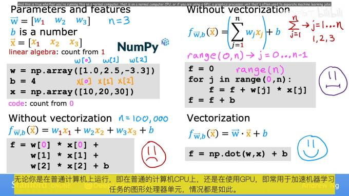
06:08numpy 的 dot 函数利用并行硬件的能力，使其比我们之前看到的 for 循环或顺序计算高效得多。
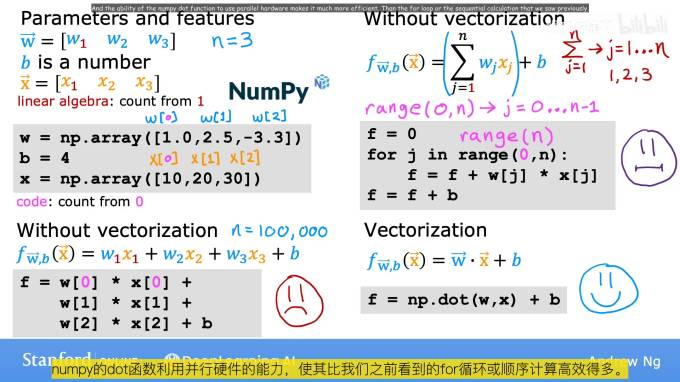
06:21现在，这个版本在 n 很大时更加实用，因为你不用像上一个版本那样，键入 w 零乘以 x 零加 w 一乘以 x 一等等一大堆额外的项。
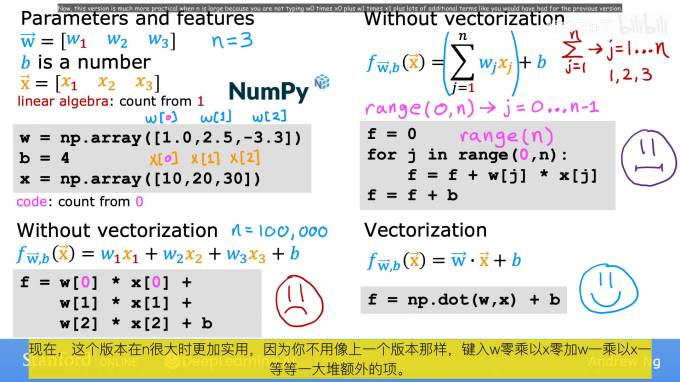
06:36但是，虽然这节省了大量的输入工作，它的计算效率依然不高，因为它仍然没有使用向量化。
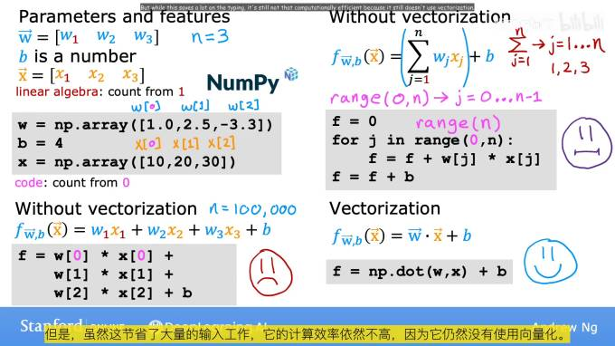
06:46所以，总结一下，向量化让你的代码更短，因此希望更容易编写，也更容易让你或他人阅读。
06:56并且它还让代码运行得快得多。
06:59但向量化背后到底有什么魔力，能让它运行得如此之快呢？
07:05我们来看看你的计算机背后到底在做什么，使得向量化代码运行如此之快。